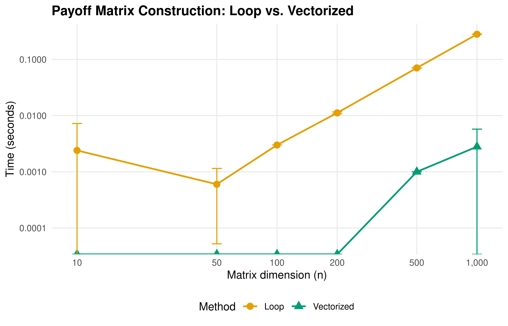

10 The R Environment
A practical guide to setting up RStudio or Positron for game-theoretic computation in R, managing reproducibility with renv, organizing projects with a consistent directory layout, and configuring the shared R/_common.R pattern and knitr options used throughout this book.
Learning objectives
After completing this chapter you will be able to:
- Configure RStudio or Positron for efficient game-theoretic computation, including essential settings and recommended pane layouts.
- Use
renvto create reproducible, self-contained R projects with locked dependency snapshots. - Organize a game theory project using a conventional directory layout with separate folders for code, data, images, and output.
- Understand and extend the
R/_common.Rshared-setup pattern used throughout this book. - Set appropriate
knitrchunk options for reproducible, publication-quality document rendering.
10.1 Motivation
When you first encounter a game-theoretic model — say the Prisoner’s Dilemma introduced in 2 — it is tempting to open a fresh R script and start coding immediately. For a single exercise, that approach works. But real research and coursework involve dozens of interrelated scripts, multiple chapters or reports, shared utility functions, and results that must be reproducible months or years later. Without a disciplined project environment, you will eventually face the dreaded situation where code that ran perfectly last semester no longer works because a package was updated, a file path changed, or a helper function was silently overwritten.
This chapter addresses the infrastructure layer beneath the game theory content. Just as Neumann & Morgenstern (1944) needed a formal language before proving theorems about games, we need a well-configured computational environment before implementing those theorems in R. The payoff is large: a properly structured project lets you focus on the economics and mathematics rather than on debugging file paths and package conflicts.
The tools we cover — RStudio/Positron as an IDE, renv for dependency management, the here package for portable paths, and a shared _common.R script for consistent defaults — form the backbone of every chapter in this book. Understanding them once will save hours of frustration throughout the rest of your game theory work.
10.2 Theory
10.2.1 The reproducibility stack
Reproducibility in computational research operates at several layers, each building on the one below:
Environment. The IDE, R version, and operating system. RStudio (by Posit) is the most widely used R IDE; Positron is Posit’s newer, open-source, multilingual IDE built on VS Code technology. Both provide integrated consoles, editors, and project management.
Dependencies. The specific versions of R packages your code uses. The
renvpackage creates a project-local library and a lockfile (renv.lock) that records the exact version of every package. Collaborators (or your future self) can callrenv::restore()to recreate the identical package environment.Project structure. A conventional directory layout ensures that scripts, data, and output live in predictable locations. The
herepackage provides a project-root-aware path constructor so thathere("R", "_common.R")resolves correctly regardless of the working directory.Rendering options. Quarto and
knitrchunk options control how code is executed, cached, and displayed. Consistent defaults — set once in a shared file — prevent output discrepancies across chapters.
10.2.2 Why IDE configuration matters for game theory
Game-theoretic computation involves particular workflows that benefit from IDE tuning. Computing Nash equilibria (see 4) often requires iterative debugging of matrix algebra. Simulating evolutionary dynamics requires monitoring long-running loops. Producing publication figures demands a graphics device with adequate resolution. A well-configured IDE makes each of these tasks smoother.
Key settings include:
- Soft-wrap long lines. Game-theoretic payoff definitions can produce wide lines; soft wrapping prevents horizontal scrolling.
- Increase console buffer. Simulations with many iterations produce verbose output; a larger buffer preserves the full log.
-
Default working directory. Set the working directory to the project root at startup so that
here()paths resolve immediately. -
Disable
.RDatasaving. Leftover workspace objects from a previous session can introduce silent errors. Starting each session with a clean workspace forces your scripts to be self-contained.
10.3 Implementation in R
10.3.1 Project directory layout
The directory structure used in this book is a good template for any game theory research project:
# Display the project layout as a tidy table
layout <- tibble::tribble(
~Folder, ~Purpose,
"R/", "Shared R scripts: _common.R, theme_publication.R, save_pub_fig.R, custom solvers",
"part-1-foundations/", "Quarto chapters for Part I (game theory foundations)",
"part-2-r-toolkit/", "Quarto chapters for Part II (R packages and tools)",
"images/", "Generated figures (PNG + PDF) from save_pub_fig()",
"data/", "Raw and processed data files",
"appendices/", "Supplementary material: refresher, solutions, glossary",
"_book/", "Rendered output (HTML, PDF, EPUB) --- not committed to Git",
"renv/", "Project-local package library managed by renv"
)
layout |>
gt() |>
tab_header(title = "Standard Project Directory Layout") |>
cols_label(Folder = "Directory", Purpose = "Contents and purpose") |>
cols_width(Folder ~ px(180))| Standard Project Directory Layout | |
| Directory | Contents and purpose |
|---|---|
| R/ | Shared R scripts: _common.R, theme_publication.R, save_pub_fig.R, custom solvers |
| part-1-foundations/ | Quarto chapters for Part I (game theory foundations) |
| part-2-r-toolkit/ | Quarto chapters for Part II (R packages and tools) |
| images/ | Generated figures (PNG + PDF) from save_pub_fig() |
| data/ | Raw and processed data files |
| appendices/ | Supplementary material: refresher, solutions, glossary |
| _book/ | Rendered output (HTML, PDF, EPUB) --- not committed to Git |
| renv/ | Project-local package library managed by renv |
10.3.2 Benchmarking vectorized vs. loop-based payoff computation
A common performance concern in game-theoretic computation is whether to use loops or vectorized operations when building payoff matrices. We benchmark both approaches to illustrate why vectorized code matters — and to demonstrate how to produce a publication-quality benchmark figure.
# Benchmark: computing a payoff matrix for an n-strategy symmetric game
# Payoff function: u(i,j) = sin(i/n * pi) * cos(j/n * pi) (arbitrary smooth payoffs)
benchmark_payoff <- function(n, method = c("loop", "vectorized")) {
method <- match.arg(method)
if (method == "loop") {
mat <- matrix(0, nrow = n, ncol = n)
for (i in 1:n) {
for (j in 1:n) {
mat[i, j] <- sin(i / n * pi) * cos(j / n * pi)
}
}
} else {
rows <- seq_len(n)
cols <- seq_len(n)
mat <- outer(sin(rows / n * pi), cos(cols / n * pi))
}
mat
}
# Run benchmarks for various matrix sizes
sizes <- c(10, 50, 100, 200, 500, 1000)
n_reps <- 5
results <- map_dfr(sizes, function(n) {
loop_times <- replicate(n_reps, {
start <- proc.time()["elapsed"]
benchmark_payoff(n, "loop")
proc.time()["elapsed"] - start
})
vec_times <- replicate(n_reps, {
start <- proc.time()["elapsed"]
benchmark_payoff(n, "vectorized")
proc.time()["elapsed"] - start
})
tibble(
n = n,
method = rep(c("Loop", "Vectorized"), each = n_reps),
time_sec = c(loop_times, vec_times)
)
})
# Summarize
bench_summary <- results |>
group_by(n, method) |>
summarise(
mean_time = mean(time_sec),
sd_time = sd(time_sec),
.groups = "drop"
)
p_bench <- ggplot(bench_summary,
aes(x = n, y = mean_time, colour = method, shape = method)) +
geom_line(linewidth = 0.8) +
geom_point(size = 3) +
geom_errorbar(aes(ymin = pmax(0, mean_time - sd_time),
ymax = mean_time + sd_time),
width = 0.05, linewidth = 0.5) +
scale_colour_manual(values = okabe_ito[c(1, 3)],
name = "Method") +
scale_shape_manual(values = c(16, 17), name = "Method") +
scale_x_log10(name = "Matrix dimension (n)",
breaks = sizes,
labels = scales::comma) +
scale_y_log10(name = "Time (seconds)",
labels = scales::label_number(accuracy = 0.0001)) +
labs(title = "Payoff Matrix Construction: Loop vs. Vectorized") +
theme_publication() +
theme(legend.position = "bottom")
p_bench
Figure 10.1: Computation time for building an n-by-n payoff matrix using a nested loop versus vectorized outer product. Vectorized operations maintain near-constant time across matrix sizes, while loop-based computation scales quadratically. Error bars show plus or minus one standard deviation over five replications.
10.3.3 The _common.R file explained
The shared setup file used in this book contains four key sections. Let us walk through each:
# --- Section 1: Load packages silently ---
suppressPackageStartupMessages({
library(tidyverse) # data manipulation and plotting
library(here) # project-root-relative paths
library(glue) # string interpolation
library(gt) # publication-quality tables
library(scales) # axis formatting helpers
})
# --- Section 2: knitr defaults ---
knitr::opts_chunk$set(
dev = c("png", "pdf"), # dual output for HTML and PDF
dpi = 300, # print-quality resolution
fig.align = "center",
fig.width = 6,
fig.height = 4,
out.width = "80%",
comment = "#>" # prefix for R output lines
)
# --- Section 3: Reproducibility ---
set.seed(42) # global seed for all stochastic operations
# --- Section 4: Custom helpers ---
source(here::here("R", "theme_publication.R"))
source(here::here("R", "save_pub_fig.R"))Section 1 loads the tidyverse ecosystem, which provides dplyr, ggplot2, purrr, tibble, and stringr — all essential for game-theoretic data wrangling and visualization. The here package ensures that file paths like here("data", "tournament.csv") work from any subdirectory. The gt package formats tables for publication, and scales provides axis label formatters.
Section 2 configures knitr to produce both PNG (for HTML output) and PDF (for LaTeX output) figures at 300 DPI. The comment option prefixes all R output with #>, making it visually distinct from code.
Section 3 sets a global random seed. This is critical for reproducibility in stochastic game-theoretic computations like Monte Carlo Shapley value estimation and evolutionary simulations.
Section 4 sources two helper files: theme_publication.R defines a clean ggplot2 theme with the Okabe-Ito colour palette, and save_pub_fig.R provides save_pub_fig() for dual PDF/PNG export.
10.3.4 Initializing renv
The renv workflow for a new project consists of three commands:
# 1. Initialize renv in a new project
renv::init()
# 2. After installing or updating packages, snapshot the current state
renv::snapshot()
# 3. On a new machine or after cloning, restore the exact package versions
renv::restore()The renv::init() call creates a project-local library in renv/library/, a lockfile renv.lock that records every package name, version, and source, and an .Rprofile that activates renv automatically when the project is opened. The lockfile is committed to version control; the library itself is not (it is listed in .gitignore).
10.4 Worked example
We now walk through setting up a new game theory analysis project from scratch, as if starting a term paper on Nash equilibrium computations.
Step 1 — Create the project. In RStudio, select File > New Project > New Directory > New Project. Name it nash-equilibrium-analysis and check “Use renv with this project.” In Positron, create a folder and run renv::init() from the R console.
Step 2 — Establish the directory layout.
# Create the standard directory structure
dirs <- c("R", "data", "images", "output")
for (d in dirs) dir.create(d, showWarnings = FALSE)Step 3 — Write the shared setup file. Create R/_common.R with package loads and knitr defaults, following the pattern shown above. This file will be sourced at the top of every .qmd chapter.
Step 4 — Install and snapshot dependencies.
# Install the packages needed for game theory work
install.packages(c("tidyverse", "here", "glue", "gt", "scales"))
# Lock the current state
renv::snapshot()After this step, renv.lock contains a complete record of every package and its version. Sharing this file (along with the code) allows anyone to recreate the exact environment.
Step 5 — Create the first analysis file. Create 01-pd-analysis.qmd in the project root:
# At the top of 01-pd-analysis.qmd:
source(here::here("R", "_common.R"))
# Define the Prisoner's Dilemma payoff matrix
pd_matrix <- matrix(c(3, 0, 5, 1), nrow = 2, byrow = TRUE,
dimnames = list(c("Cooperate", "Defect"),
c("Cooperate", "Defect")))
pd_matrixStep 6 — Configure IDE settings. In RStudio, go to Tools > Global Options:
- Under General, uncheck “Restore .RData into workspace at startup” and set “Save workspace to .RData on exit” to “Never.”
- Under Code > Display, enable “Soft-wrap R source files.”
- Under Appearance, choose a font with clear distinction between
0andO, such as Fira Code or JetBrains Mono.
In Positron, equivalent settings live in the Settings editor (Ctrl+,). The key setting is "r.restoreWorkspace": false.
Step 7 — Verify reproducibility. Close and reopen the project. Run renv::status() to confirm all packages are synchronized. Then render the first analysis file. If it produces output without errors, the environment is correctly configured.
# Verify that our environment is properly configured
env_info <- tibble::tribble(
~Component, ~Value,
"R version", paste(R.version$major, R.version$minor, sep = "."),
"Platform", R.version$platform,
"tidyverse", as.character(packageVersion("tidyverse")),
"ggplot2", as.character(packageVersion("ggplot2")),
"here", as.character(packageVersion("here")),
"gt", as.character(packageVersion("gt")),
"Project root", here::here()
)
env_info |>
gt() |>
tab_header(title = "Current R Environment") |>
cols_label(Component = "Component", Value = "Detected value")| Current R Environment | |
| Component | Detected value |
|---|---|
| R version | 4.6.0 |
| Platform | x86_64-pc-linux-gnu |
| tidyverse | 2.0.0 |
| ggplot2 | 4.0.3 |
| here | 1.0.2 |
| gt | 1.3.0 |
| Project root | /home/runner/work/strategy-in-r/strategy-in-r |
10.5 Extensions
The project setup described here can be extended in several directions:
-
Docker containers. For maximum reproducibility, wrap the entire R environment in a Docker image. The
rockerproject provides pre-built images with R, RStudio Server, and the tidyverse. This guarantees identical results regardless of the host operating system. -
Continuous integration. Services like GitHub Actions can render your Quarto book on every push, catching errors early. This book uses a GitHub Actions workflow that installs dependencies via
renv::restore()and renders all chapters. -
Targets pipelines. The
targetspackage extends reproducibility from package management to workflow management, tracking which outputs are up-to-date and re-running only what has changed. This is particularly valuable for long-running game-theoretic simulations. - Computational environments for teaching. Posit Cloud (formerly RStudio Cloud) provides browser-based R environments with pre-configured packages, eliminating setup friction for students new to R. Each student gets an isolated workspace with the correct package versions.
For further reading on reproducible workflows in R, see Osborne (2004) for the mathematical context that motivates careful computation, and Shoham & Leyton-Brown (2009) for the algorithmic perspective on game-theoretic implementation.
Exercises
Project initialization. Create a new R project called
stag-hunt-analysiswithrenvenabled. Installtidyverse,here, andgt. Write aR/_common.Rfile that loads these packages, sets a random seed, and configures knitr to produce PNG output at 300 DPI. Snapshot the environment withrenv::snapshot()and verify thatrenv.lockcontains all three packages.Vectorization practice. Extend the benchmark from this chapter to include a third method that uses
purrr::map2_dbl()inside atidyr::crossing()grid. Plot all three methods on the same benchmark figure. Where doespurrrfall relative to the loop andouter()approaches?Path portability. A collaborator sends you a script that begins with
setwd("C:/Users/alice/games/")and then reads a file withread_csv("data/payoffs.csv"). Explain why this will fail on your machine. Rewrite the first two lines usinghere()so that the script works for any collaborator who clones the repository.Custom knitr options. Modify the
_common.Rpattern to include a conditional: if the output format is HTML, setfig.width = 8; if PDF, setfig.width = 6. (Hint: useknitr::is_html_output().) Explain why different widths might be appropriate for the two formats.Dependency audit. Run
renv::status()on a project of your choice and interpret the output. Identify any packages that are installed but not recorded in the lockfile, and any that are recorded but not installed. Explain whatrenv::snapshot()andrenv::restore()would each do in this situation.
Solutions appear in D.